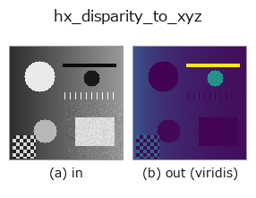

halcon_ext op• データ種: image → image
• 呼び出し: fullseye.apply(img, "hx_disparity_to_xyz", a=0.5, b=0.5) (2-D は 1 画像 + 2 スカラつまみ a,b∈[0,1] のモデル)
• HALCON 相当: disparity_image_to_xyz(意味・パラメータは HALCON リファレンスが参考になる)

*図は合成の入力 128×128 で実際に走らせた出力。左が入力、右が出力。点群は上から見た散布(明るさ = z)、1-D 列は折れ線、体積は z 方向の最大値投影、動画は中央フレーム、複素画像は振幅、絵にならない返り値は値そのもの。*
*出力は viridis 風の疑似カラー(暗い紫 = 小、黄 = 大)。距離・位相・向き・深度のような「量の場」を読むため。*
つまみ a を振る(0.1 / 0.5 / 0.9、もう一方は既定):
▸ hx_disparity_to_xyz: knob a sweep (docs site)
つまみ b を振る(0.1 / 0.5 / 0.9、もう一方は既定):
▸ hx_disparity_to_xyz: knob b sweep (docs site)
別の画像でも(合成シーン / 写真 / 硬貨。上段が入力、下段がその出力。つまみは既定):
▸ hx_disparity_to_xyz: other inputs (docs site)
*4 列目はカラー (H,W,3) の入力。この op は色を跨がずに扱える(色チャネルを 3 本目の空間軸として畳み込まない)。*
視差画像から深度 Z = f*baseline/disparity を計算(焦点/基線は a,b で可変)。正規化 Z。
`v(0〜1)を視差 disp = v*63 + 0.5 画素相当に写し、Z = f * baseline / disp` を計算して min-max で
[0,1] に正規化した画像を返す。X, Y は計算しない(Z のみ)。
• `a → 焦点距離 f = 200 + 600*a`。
• `b → 基線長 baseline = 0.05 + 0.15*b`。
• 視差の下限を 0.5 に置いているのでゼロ除算は起きない。
注意: `f * baseline は全画素共通の定数倍で、最後の min-max 正規化で打ち消されるため、a, b` を変えても
出力は変わらない(実測で完全一致)。出力は実質「視差の逆数を正規化したもの」で、視差最大(`v = 1`)が 0、
視差最小(`v = 0`)が 1 になる(近い物ほど暗い)。絶対的な深度が要る用途には使えない。逆数変換で遠方の
量子化が粗くなるので、`v` が小さい領域の値は不安定。
• gallery2d_halcon_ext ファミリ ガイド
• サンプルデータ カタログ(DL URL / ライセンス) — 2-D は skimage.data(BSD/public)+ 合成、3-D は実データ源(Stanford/PDS 等)の DL URL。
• 演算子の来歴・参考文献 — この op 族の元になった研究/手法の出典。
• アルゴリズムの正典(著者・年)と用途は上記ファミリ使い方ガイドに記載。
下のプログラムは実際に走ることを確かめてある(図と同じ入力)。Studio のヘルプではこのブロックがボタンになり、その場で読み込んで実行できる。
hx_disparity_to_xyz 0.50 0.50
▸ Load this pipeline · Load & run
• gallery2d_halcon_ext — py -3.11 examples/gallery2d_halcon_ext.py
image を入力に取れる)identity · gaussian · mean_box · bilateral · unsharp · median · min_filter · max_filter
halcon_ext)hx_gen_circle · hx_gen_ellipse · hx_gen_rectangle2 · hx_gen_checker_region · hx_gen_grid_region · hx_gabor · hx_fit_surface1 · hx_fit_surface2
*Provenance: ops.py — 2D operator registry. この per-op ノートは tools/opdocs.py md が自動生成(手編集しない)。*
© 2026 Kazufumi Furuse — Fullseye operator documentation. Licensed under Apache-2.0.
{kind=link}
{kind=link}
{kind=link}